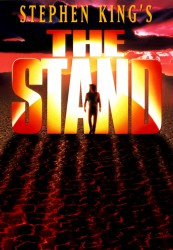

")
Alternativ: Stephen Kings 'The Stand' - Das letzte Gefecht (Originaltitel)
 
 IMDB-Wertung: 7.3 / 10
IMDB-Wertung: 7.3 / 10  Metascore:
Metascore: 
Aus einem Forschungslabor des Militärs entweicht ein gefährliches Grippevirus. Binnen kürzester Zeit verbreitet sich der Erreger über die Erde. Die Epidemie nimmt bald apokalyptische Dimensionen an. Doch einige wenige, wie Stu Redman (Gary Sinise), scheinen gegen die Krankheit immun zu sein.
verschieben zu "X:\Person\Stephen King"
Jahr: 1994
Dauer: 88 Minuten
FSK: 16
Land: USA Studio: ABCTonspuren: DD2.0 - ,
Untertitel: Deutsch, Englisch,
Auflösung: SD (712x568) Größe: 1392 MB
Genre: Horror, Drama, Sci-Fi, Abenteuer, Fantasy, TV-Serie
Regisseur: Mick Garris
Drehbuch: Jason Hall
Soundtrack:
Darsteller:
 Gary Sinise als Stu Redman
Gary Sinise als Stu Redman Jamey Sheridan als Randall Flagg
Jamey Sheridan als Randall Flagg Ruby Dee als Mother Abagail Freemantle
Ruby Dee als Mother Abagail Freemantle Ossie Davis als Judge Richard Farris
Ossie Davis als Judge Richard Farris Miguel Ferrer als Lloyd Henreid
Miguel Ferrer als Lloyd Henreid Matt Frewer als Trashcan Man
Matt Frewer als Trashcan Man Ray Walston als Glen Bateman
Ray Walston als Glen Bateman Rob Lowe als Nick Andros
Rob Lowe als Nick Andros Bill Fagerbakke als Tom Cullen
Bill Fagerbakke als Tom Cullen Rick Aviles als Rat Man
Rick Aviles als Rat Man Shawnee Smith als Julie Lawry
Shawnee Smith als Julie Lawry Sam Anderson als Whitney Horgan
Sam Anderson als Whitney Horgan Warren Frost als George Richardson
Warren Frost als George Richardson Tom Holland als Carl Hough
Tom Holland als Carl Hough Stephen King als Teddy Weizak
Stephen King als Teddy Weizak Bruce MacVittie als Ace-High
Bruce MacVittie als Ace-High Dan Martin als Rich Moffat
Dan Martin als Rich Moffat Max Wright als Dr. Herbert Denninger
Max Wright als Dr. Herbert Denninger Patrick Kilpatrick als Ray Booth
Patrick Kilpatrick als Ray Booth Ray McKinnon als Charlie Campion
Ray McKinnon als Charlie Campion Troy Evans als Sheriff Baker
Troy Evans als Sheriff Baker John Landis als Russ Dorr
John Landis als Russ Dorr Jim Haynie als Deputy Kingsolving
Jim Haynie als Deputy Kingsolving Sherman Howard als Dr. Dietz
Sherman Howard als Dr. Dietz Sam Raimi als Bobby Terry
Sam Raimi als Bobby Terry Richard Lineback als Poke
Richard Lineback als Poke Jordan Lund als Bill Hapscomb
Jordan Lund als Bill Hapscomb Wendy Phillips als Lisa Hull
Wendy Phillips als Lisa Hull Ken Jenkins als Peter Goldsmith
Ken Jenkins als Peter GoldsmithDatei: X:\HD-Serien\Stand, The\The Stand - Das letzte Gefecht E01.mkv seit 26.03.2017
Festplatte: HD Serien(I-ST)
 Es gibt insgesamt 182 Filme in der Gruppe 'HD-Serien'
Es gibt insgesamt 182 Filme in der Gruppe 'HD-Serien'